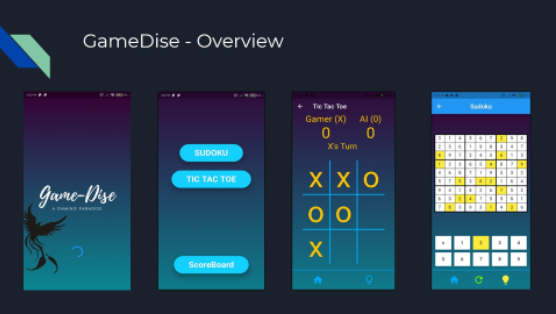
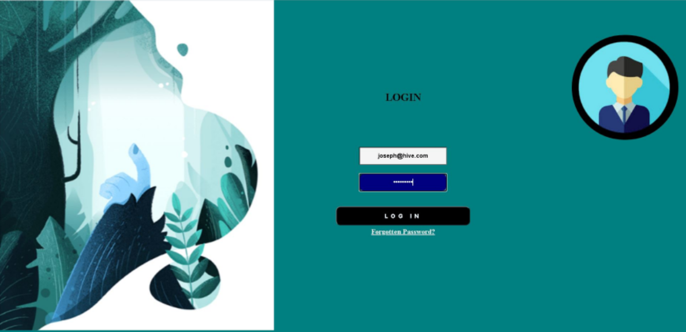
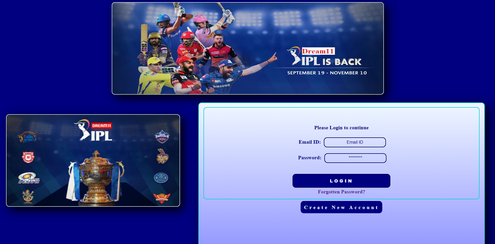
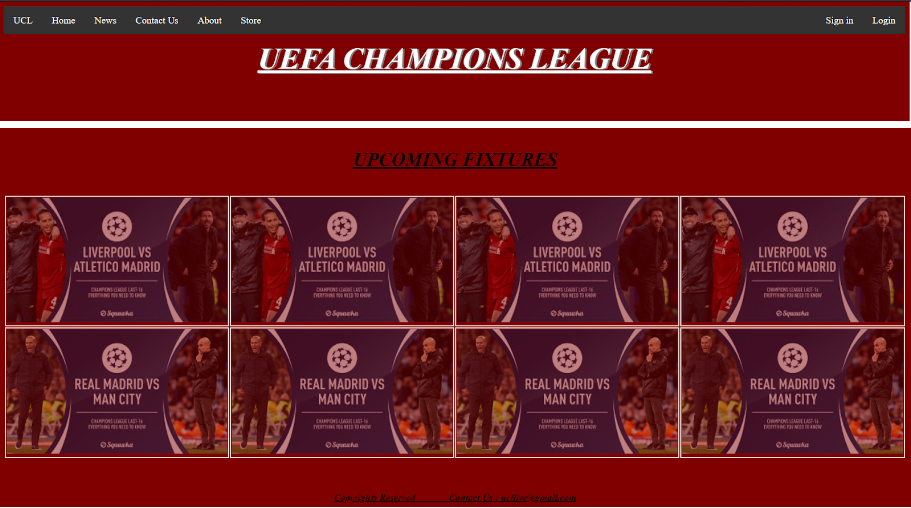

Designed a web application for online allotment for the various courses provided by the Institute
or an organization to students as per the choices previously filled by students.
This Web Application was developed using PHP and PHPMyadmin.
Using a program of random allocation based on various filters and taking into account the various choices provided by the student the allocation takes place.
The first choice of every student is checked then the availability of seats is checked and if there is availability the seat is allotted to that particular student.
The emails of the allotted seats are sent using the phpmailer software

Developed a website called House-Helpers which focusses on providing household services and help like Salon, Massage,
Housekeeping, Trainer, Electrical Appliances and Plumbing repairs. It was developed using Django and hosted on Heroku.
This is a Django project done by me and my group. The website idea is similar to UrbanClap where
household services are provided by helpers and professionals and all of it is coordinated online.
I used Django, Python, Html, CSS, Bootstrap for developing the website.
Deployed

Designed a web application for online service and help in the allocation of duty to faculty during exams.
This web application was developed using PHP. I have used Google Signin Api to allow professors to login through their college ID.
In this system, the faculty gets allocated for a particular exam according to his/her leave status and appropriate constraints.
The emails are sent through a PHP mailer. Made front-end responsive using Bootstrap.
To design a system for assigning faculty during the examination, it would be random allocation as per the attendance status of a particular faculty.
ReLis is a platform that allows users to search books using specific keywords, titles, author names, genres, etc.
This platform has a user-friendly interface that allows users to buy, and rent the book.
Developed using Flutter for front-end, NodeJS framework for backend and MongoDB database system.
The feature of the recommendation system personalizes the user experience by suggesting new books to explore.
The platform also provides an audiobook which is formed using text to speech conversion which is beneficial to users .
One can also get translated books.
Audiobooks are available for every book for the visually impaired.
Deployed

Game development involves processes that combine sound, control systems, artificial intelligence (AI), and human factors.
With the invention of touch screen mobiles and the ease of storing large amounts of data, the gaming industry is one that has evolved significantly.
The Tic-Tac-Toe game is played on a three-by-three board. The game of tic-tac-toe is a game of predictability.
This game has 2 modes of playing: a.Play against a computer, b.Play against another Player. Sudoku is a logic-based, combinatorial number-placement puzzle.
In GameDise, the user can select between two games which are Sudoku and Tic Tac Toe.
Deployed

HIVE(Hire Vehicle) is a vehicle rental service built on Flutter and Firebase Frameworks.
HiVe lets you book vehicles using your Smartphone and a web application for admins to manage the business.
HiVe is a system that provides managed waiting time, car rental service along with smart payment options for saving time.
This web app is designed to be run on any device which will be given to the user for booking a ride after entering his current location and desired vehicle which has to be chosen from the list of available vehicles from the web app.
This app will be made user friendly as it will be used by people in age group 14-65.
Download
BurnOut is a fitness and music app developed on Flutter- Dart Framework and the application uses Firebase for Database management.
It is an Execrise app having features such as:
Timer for exercise and relaxation,
English and Hindi Songs,
Water Tracker,
Dashboard showing all details,
LogIn and Registration Page.
Download

This project aims to develop an IPL sports-based website merged with e-
commerce that is online shopping for customers with the goal that it is very easy
to shop your favourite sport goods and gears from an extensive number of
online shopping sites. With the help of this you can carry out an online
shopping from your home. I have used Rest APIs to fetch scores, match details and results. Some major functionalities include
Simple Registration and Login portal for users and admin.
User Profile and Information, Simple Easy UI based, Can view Score updates, Image Gallery, Fixtures, Trending IPL News, etc,
E-commerce Store: Add to Cart; Add to wish-list; Payment Gateway.
Download

This is my first basic HTML website developed using CSS, Bootstrap, It includes a list of fixtures and other related details of the Football competition UEFA Champions League.
It is linked with the official website and uses creative and attractive User Interface to attract the users.
Deployed